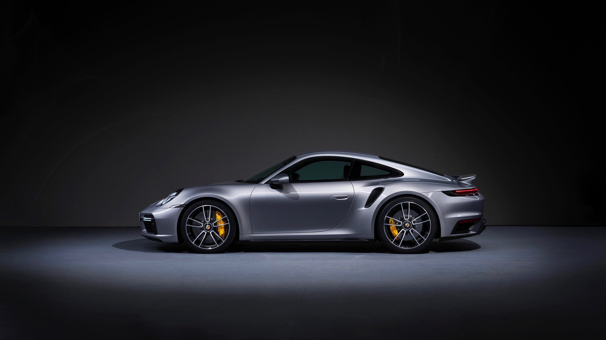

Aracınız için premium düzeyde seramik kaplama, detaylı iç temizlik ve boya koruma hizmetleri.
Aracınıza hak ettiği değeri veriyoruz.
Özel şampuanlar ve cilalarla aracınızın dış yüzeyinde göz alıcı bir parlaklık ve koruma sağlıyoruz.
Koltuklar, konsol ve tüm iç mekan detaylıca temizlenir, ilk günkü ferahlığına kavuşur.
Boya yüzeyini dış etkenlere karşı yıllarca koruyan üst düzey nanoteknolojik seramik kaplama.
Kılcal çiziklerin giderilmesi ve boyanın ayna parlaklığına ulaşması için profesyonel polisaj işlemi.
Aracınızı ilk günkü ihtişamına kavuştururken izlediğimiz profesyonel adımlar.
Aracınızın kaporta, boya ve iç mekan durumu detaylıca incelenir, ihtiyaçları belirlenir.
Özel şampuanlar, kil ve demirtozu temizleyiciler ile yüzeydeki tüm kalıntılar arındırılır.
Belirlenen hizmetler (polisaj, seramik, kuaför vb.) uzman ekibimizce titizlikle uygulanır.
Tüm detaylar son bir kez gözden geçirilir ve araç mükemmel kondisyonda size teslim edilir.
Hangi bölgeye hangi işlemleri uyguluyoruz? Araç üzerindeki noktalara tıklayarak inceleyin.

İlgili bölgede sunduğumuz detaylı işlemleri görmek için araç üzerindeki artı (+) ikonlarına tıklayın.
Motor temizliği hizmetlerimizden çarpıcı öncesi ve sonrası sonuçları inceleyin.
Randevu almak veya hizmetlerimiz hakkında bilgi almak için bize ulaşın.